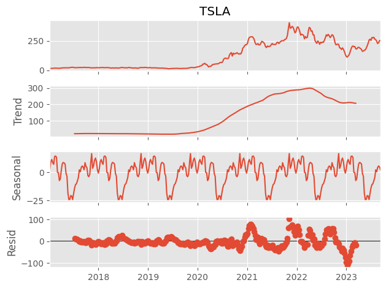

Series de tiempo y forecasting#
import numpy as np
import pandas as pd
import matplotlib.pyplot as plt
import seaborn as sns
from statsmodels.tsa.seasonal import seasonal_decompose
import pmdarima as pm
import yfinance as yf
yf.pdr_override()
import pandas_datareader.data as web
import datetime
plt.style.use('ggplot')
Primer paso: leer los datos#
btc = web.get_data_yahoo(['GOOG', 'AAPL', 'TSLA'], start=pd.to_datetime('2017-01-01'), end=pd.to_datetime('2023-09-11') )['Close']
[ 0%% ]
[**********************67%%****** ] 2 of 3 completed
[*********************100%%**********************] 3 of 3 completed
Segundo paso: análisis exploratorio#
btc.plot()
<Axes: xlabel='Date'>
# wbtc = btc.resample('W').mean()
mdf = btc.resample('W').mean()
mdf.plot()
<Axes: xlabel='Date'>
decomp = seasonal_decompose(mdf, model='additive')
decomp.plot()
# plt.show()
---------------------------------------------------------------------------
TypeError Traceback (most recent call last)
Cell In[6], line 1
----> 1 decomp = seasonal_decompose(mdf, model='additive')
2 decomp.plot()
3 # plt.show()
File ~\AppData\Local\Programs\Python\Python311\Lib\site-packages\statsmodels\tsa\seasonal.py:214, in seasonal_decompose(x, model, filt, period, two_sided, extrapolate_trend)
210 results = []
211 for s, name in zip(
212 (seasonal, trend, resid, x), ("seasonal", "trend", "resid", None)
213 ):
--> 214 results.append(pw.wrap(s.squeeze(), columns=name))
215 return DecomposeResult(
216 seasonal=results[0],
217 trend=results[1],
218 resid=results[2],
219 observed=results[3],
220 )
File ~\AppData\Local\Programs\Python\Python311\Lib\site-packages\statsmodels\tools\validation\validation.py:237, in PandasWrapper.wrap(self, obj, columns, append, trim_start, trim_end)
235 new.append(append if c is None else f"{c}_{append}")
236 columns = new
--> 237 return pd.DataFrame(obj, columns=columns, index=index)
238 else:
239 raise ValueError("Can only wrap 1 or 2-d array_like")
File ~\AppData\Local\Programs\Python\Python311\Lib\site-packages\pandas\core\frame.py:758, in DataFrame.__init__(self, data, index, columns, dtype, copy)
747 mgr = dict_to_mgr(
748 # error: Item "ndarray" of "Union[ndarray, Series, Index]" has no
749 # attribute "name"
(...)
755 copy=_copy,
756 )
757 else:
--> 758 mgr = ndarray_to_mgr(
759 data,
760 index,
761 columns,
762 dtype=dtype,
763 copy=copy,
764 typ=manager,
765 )
767 # For data is list-like, or Iterable (will consume into list)
768 elif is_list_like(data):
File ~\AppData\Local\Programs\Python\Python311\Lib\site-packages\pandas\core\internals\construction.py:333, in ndarray_to_mgr(values, index, columns, dtype, copy, typ)
324 values = sanitize_array(
325 values,
326 None,
(...)
329 allow_2d=True,
330 )
332 # _prep_ndarraylike ensures that values.ndim == 2 at this point
--> 333 index, columns = _get_axes(
334 values.shape[0], values.shape[1], index=index, columns=columns
335 )
337 _check_values_indices_shape_match(values, index, columns)
339 if typ == "array":
File ~\AppData\Local\Programs\Python\Python311\Lib\site-packages\pandas\core\internals\construction.py:738, in _get_axes(N, K, index, columns)
736 columns = default_index(K)
737 else:
--> 738 columns = ensure_index(columns)
739 return index, columns
File ~\AppData\Local\Programs\Python\Python311\Lib\site-packages\pandas\core\indexes\base.py:7128, in ensure_index(index_like, copy)
7126 return Index(index_like, copy=copy, tupleize_cols=False)
7127 else:
-> 7128 return Index(index_like, copy=copy)
File ~\AppData\Local\Programs\Python\Python311\Lib\site-packages\pandas\core\indexes\base.py:516, in Index.__new__(cls, data, dtype, copy, name, tupleize_cols)
513 data = com.asarray_tuplesafe(data, dtype=_dtype_obj)
515 elif is_scalar(data):
--> 516 raise cls._raise_scalar_data_error(data)
517 elif hasattr(data, "__array__"):
518 return Index(np.asarray(data), dtype=dtype, copy=copy, name=name)
File ~\AppData\Local\Programs\Python\Python311\Lib\site-packages\pandas\core\indexes\base.py:5066, in Index._raise_scalar_data_error(cls, data)
5061 @final
5062 @classmethod
5063 def _raise_scalar_data_error(cls, data):
5064 # We return the TypeError so that we can raise it from the constructor
5065 # in order to keep mypy happy
-> 5066 raise TypeError(
5067 f"{cls.__name__}(...) must be called with a collection of some "
5068 f"kind, {repr(data)} was passed"
5069 )
TypeError: Index(...) must be called with a collection of some kind, 'seasonal' was passed
model = pm.auto_arima(mbtc, seasonal=True, m=12)
model
---------------------------------------------------------------------------
ValueError Traceback (most recent call last)
c:\Users\Alejo\OneDrive - Universidad de Las Américas\UDLA\pmdb\pmdb-material\forecast.ipynb Cell 10 line 1
----> <a href='vscode-notebook-cell:/c%3A/Users/Alejo/OneDrive%20-%20Universidad%20de%20Las%20Am%C3%A9ricas/UDLA/pmdb/pmdb-material/forecast.ipynb#X13sZmlsZQ%3D%3D?line=0'>1</a> model = pm.auto_arima(mbtc, seasonal=True, m=12)
<a href='vscode-notebook-cell:/c%3A/Users/Alejo/OneDrive%20-%20Universidad%20de%20Las%20Am%C3%A9ricas/UDLA/pmdb/pmdb-material/forecast.ipynb#X13sZmlsZQ%3D%3D?line=1'>2</a> model
File c:\Users\Alejo\AppData\Local\Programs\Python\Python311\Lib\site-packages\pmdarima\arima\auto.py:422, in auto_arima(y, X, start_p, d, start_q, max_p, max_d, max_q, start_P, D, start_Q, max_P, max_D, max_Q, max_order, m, seasonal, stationary, information_criterion, alpha, test, seasonal_test, stepwise, n_jobs, start_params, trend, method, maxiter, offset_test_args, seasonal_test_args, suppress_warnings, error_action, trace, random, random_state, n_fits, return_valid_fits, out_of_sample_size, scoring, scoring_args, with_intercept, sarimax_kwargs, **fit_args)
419 start = time.time()
421 # copy array
--> 422 y = check_endog(y, dtype=DTYPE, preserve_series=True)
423 n_samples = y.shape[0]
425 # the workhorse of the model fits
File c:\Users\Alejo\AppData\Local\Programs\Python\Python311\Lib\site-packages\pmdarima\utils\array.py:187, in check_endog(y, dtype, copy, force_all_finite, preserve_series)
148 """Wrapper for ``check_array`` and ``column_or_1d`` from sklearn
149
150 Parameters
(...)
177 A 1d numpy ndarray
178 """
179 endog = skval.check_array(
180 y,
181 ensure_2d=False,
(...)
184 dtype=dtype,
185 )
--> 187 endog = skval.column_or_1d(endog)
188 if not preserve_series:
189 return endog
File c:\Users\Alejo\AppData\Local\Programs\Python\Python311\Lib\site-packages\sklearn\utils\validation.py:1245, in column_or_1d(y, dtype, warn)
1234 warnings.warn(
1235 (
1236 "A column-vector y was passed when a 1d array was"
(...)
1241 stacklevel=2,
1242 )
1243 return _asarray_with_order(xp.reshape(y, (-1,)), order="C", xp=xp)
-> 1245 raise ValueError(
1246 "y should be a 1d array, got an array of shape {} instead.".format(shape)
1247 )
ValueError: y should be a 1d array, got an array of shape (81, 3) instead.
pred = model.predict(n_periods=24, return_conf_int=True)
cint = pd.DataFrame(pred[1], index=pred[0].index)
---------------------------------------------------------------------------
NameError Traceback (most recent call last)
c:\Users\Alejo\OneDrive - Universidad de Las Américas\UDLA\pmdb\pmdb-material\forecast.ipynb Cell 11 line 1
----> <a href='vscode-notebook-cell:/c%3A/Users/Alejo/OneDrive%20-%20Universidad%20de%20Las%20Am%C3%A9ricas/UDLA/pmdb/pmdb-material/forecast.ipynb#X14sZmlsZQ%3D%3D?line=0'>1</a> pred = model.predict(n_periods=24, return_conf_int=True)
<a href='vscode-notebook-cell:/c%3A/Users/Alejo/OneDrive%20-%20Universidad%20de%20Las%20Am%C3%A9ricas/UDLA/pmdb/pmdb-material/forecast.ipynb#X14sZmlsZQ%3D%3D?line=1'>2</a> cint = pd.DataFrame(pred[1], index=pred[0].index)
NameError: name 'model' is not defined
df = pd.concat([mbtc, pred[0]], axis=1)
df.columns = ['actual', 'forecast']
df.plot()
plt.fill_between(cint.index, cint[0], cint[1], alpha=0.2)
plt.show()
---------------------------------------------------------------------------
NameError Traceback (most recent call last)
c:\Users\Alejo\OneDrive - Universidad de Las Américas\UDLA\pmdb\pmdb-material\forecast.ipynb Cell 12 line 1
----> <a href='vscode-notebook-cell:/c%3A/Users/Alejo/OneDrive%20-%20Universidad%20de%20Las%20Am%C3%A9ricas/UDLA/pmdb/pmdb-material/forecast.ipynb#X15sZmlsZQ%3D%3D?line=0'>1</a> df = pd.concat([mbtc, pred[0]], axis=1)
<a href='vscode-notebook-cell:/c%3A/Users/Alejo/OneDrive%20-%20Universidad%20de%20Las%20Am%C3%A9ricas/UDLA/pmdb/pmdb-material/forecast.ipynb#X15sZmlsZQ%3D%3D?line=1'>2</a> df.columns = ['actual', 'forecast']
<a href='vscode-notebook-cell:/c%3A/Users/Alejo/OneDrive%20-%20Universidad%20de%20Las%20Am%C3%A9ricas/UDLA/pmdb/pmdb-material/forecast.ipynb#X15sZmlsZQ%3D%3D?line=2'>3</a> df.plot()
NameError: name 'pred' is not defined
Predicción#
df = pd.read_excel('ventas.xlsx', sheet_name='Sheet2', header=3).head(81)
df
| Row Labels | AAPL | GOOG | TSLA | Grand Total | |
|---|---|---|---|---|---|
| 0 | 2017-01-01 00:00:00 | 29.892500 | 40.395238 | 15.954700 | 86.242438 |
| 1 | 2017-02-01 00:00:00 | 33.428552 | 40.845829 | 17.580737 | 91.855118 |
| 2 | 2017-03-01 00:00:00 | 35.154457 | 41.705565 | 17.210435 | 94.070457 |
| 3 | 2017-04-01 00:00:00 | 35.721710 | 42.202843 | 20.317228 | 98.241781 |
| 4 | 2017-05-01 00:00:00 | 38.056932 | 46.964205 | 21.101606 | 106.122742 |
| ... | ... | ... | ... | ... | ... |
| 76 | 2023-05-01 00:00:00 | 172.622728 | 116.745682 | 175.799090 | 465.167499 |
| 77 | 2023-06-01 00:00:00 | 184.283333 | 123.228096 | 246.090476 | 553.601905 |
| 78 | 2023-07-01 00:00:00 | 192.411501 | 123.553499 | 273.505500 | 589.470500 |
| 79 | 2023-08-01 00:00:00 | 181.083913 | 131.149131 | 242.333043 | 554.566087 |
| 80 | 2023-09-01 00:00:00 | 183.562000 | 136.456000 | 250.681998 | 570.699997 |
81 rows × 5 columns
sku = 'TSLA'
decomp = seasonal_decompose(mdf[sku], model='additive')
decomp.plot()
plt.show()

fcst_acumulado = {}
cint_acumulado = {}
for sku in ['GOOG', 'AAPL', 'TSLA']:
model = pm.auto_arima(mdf[sku], seasonal=True, m=12, cint=False)
pred = model.predict(n_periods=24, return_conf_int=True)
fcst = pred[0]
cint_acumulado[sku] = pd.DataFrame(pred[1], index=pred[0].index)
fcst_acumulado[sku] = fcst
df_fcst = pd.DataFrame(fcst_acumulado)
df_cint = pd.concat(cint_acumulado, axis=1)
sku = 'AAPL'
fig, ax = plt.subplots()
mdf[sku].plot(ax=ax)
df_fcst[sku].plot(ax=ax)
plt.fill_between(df_cint[sku].index, df_cint[sku][0], df_cint[sku][1], alpha=0.2)
<matplotlib.collections.PolyCollection at 0x204fab69c90>
optimista = df_fcst * 1.05
normal = df_fcst.copy()
pesimista = df_fcst * 0.95
fig,ax = plt.subplots(figsize=(15, 5))
mdf['TSLA'].plot(ax = ax)
optimista['TSLA'].plot(ax = ax)
normal['TSLA'].plot(ax = ax)
pesimista['TSLA'].plot(ax = ax)
<Axes: xlabel='Date'>
normal.to_excel('normal.xlsx')
df = pd.concat([mdf['AAPL'], pred[0]], axis=1)
df.columns = ['actual', 'forecast']
df.plot()
plt.fill_between(cint.index, cint[0], cint[1], alpha=0.2)
plt.show()
Esto es un título#
ésto un subtítulo#
\(E=mc^2\)
Voy a empezar importando los datos que necesito
x = 3